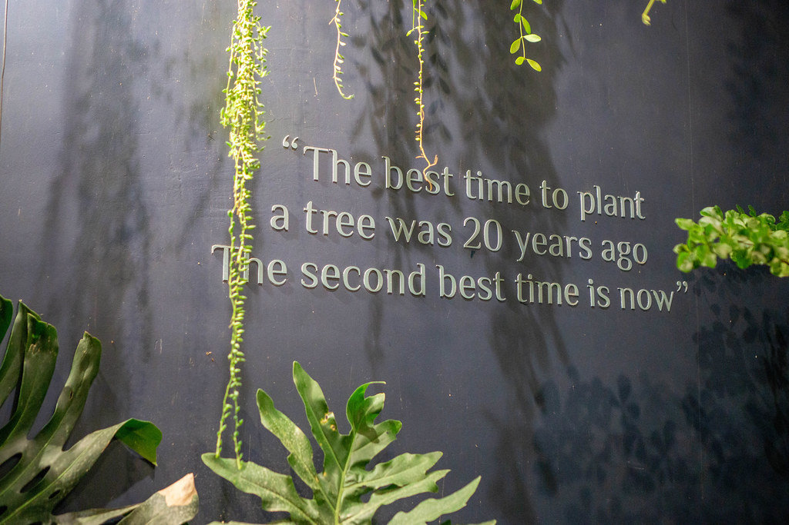

Wrap-up
Last updated on 2026-05-21 | Edit this page
Overview
Questions
- What changes are you going to start implementing in your software development routine?
Objectives
After completing this episode, participants should be able to:
- Reflect on the good research software development principles we covered in the course and their relevance in supporting reproducible research
- Start making changes to their own software development practices to implement some of the principles we covered
In this course, we explored some core practices that help researchers build high-quality, sustainable, and reusable software to support reproducible computational research.
You learned how to structure a project and track changes to it from the start, work with reproducible environments, write readable and well-organised code, test it for correctness, document it clearly, and share it for collaboration and reuse. By putting these skills together, you now have a toolkit for developing research software that is more robust, more transparent, and easier for both you and others to use and maintain.
As you continue your work, remember that small, consistent improvements in your practices make a big difference over time. Some practices may require time and persistence to implement and embed in your routine. Others are small changes you can start practicing today.

The final branch of the software project repository contains an improved version of the example code after good practices have been applied.
Summary of tools and practices for building better research software
The table below provides a summary of some good practices for developing research software, together with different tools that can help with such practices and how they contribute to the the FAIR and other good software principles.
| Practices | Tools | FAIR | Readable/Understandable | Correct/Reliable | Sustainable/Maintainable |
|---|---|---|---|---|---|
| Use version control |
git, GitHub, GitLab, BitBucket |
F | |||
| Write modular code with well defined interfaces | R | x | x | ||
| Connect reusable software components into automated/reproducible software pipelines | Command line tools, CLI, workflow tools (Galaxy, Snakemake, WorkflowHub, CWL) | I, R | |||
| Use reproducible software development environments |
venv, conda, uv, Docker,
etc. |
R | |||
| Use conventional folder structures, format your code to comply with coding conventions | PEP8, IDEs (highlighting syntax and format, and conforming to coding conventions) | R | |||
| Use standard exchange data formats/communication protocols/interfaces | CSV, YAML, JSON, CLI, REST, HTTP(S), etc. | I | x | ||
| Test your software | Unit, functional, integration, regression, etc. tests, IDEs (testing and debugging), CI/CD (automation) | x | |||
| Document your software | Comments and documentation strings, README, guides, contributions guidelines, MkDocs, ReadtheDocs | R | x | ||
| Share your software & encourage review | Code sharing platforms/services (e.g. GitHub, GitLab, BitBucket) and their code review facilities | F, A | x | ||
| License your software | Various open source licences for code (MIT, BSD, GPL, LGPL, etc.), LICENSE repository files | R | |||
| Use persistent identifiers for your software | DOIs, SWHIDs, Zenodo, FigShare, Software Heritage, etc. | F | x | ||
| Provide citation & metadata info for your software | CITATION.cff, cffinit, DOIs, Zenodo, CFF, CodeMeta,
etc. |
R | x | ||
| Build community & encourage collaboration around your software | Code of Conduct, README, CONTRIBUTING, open source project governance processes | x |
Best practices are always evolving and there is usually more we could be doing to make our software even better, even more reproducible, even FAIRer. The skills and techniques introduced in this lesson are a great place to start!
Tools for assessing FAIRness
Here are some tools that can check your software and provide an assessment of its FAIRness:
Wider research software development principles
Software and people who develop it have significance within the research environment and a broader impact on society and the planet. FAIR research software principles cover some aspects and operate within the wider research software development principles - recommended by the Software Sustainability Institute’s Director Neil Chue Hong during his keynote at RSECon23. These principles can help us explore and reflect on our own work and guide us on a path to better research.
Further reading
Check out the full reference set for the course.
- The principles, practices and tools promoted in this course (including the FAIR principles for research software) support computational research and researchers by saving time, reducing barriers to discovery, and increasing impact of the research output.
- When developing software for your research, think about how it will help you and your team, your peers and domain/community and the world.